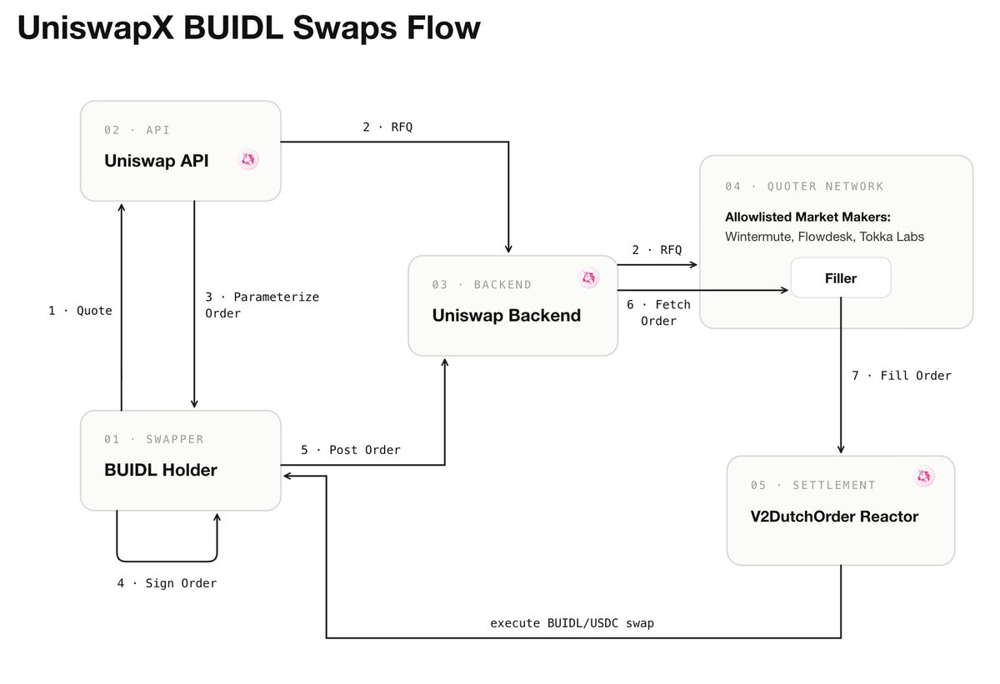
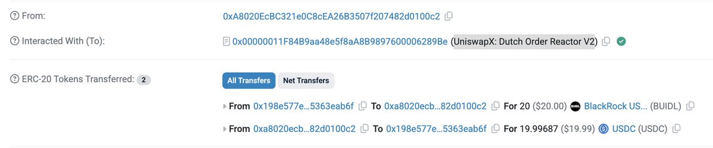
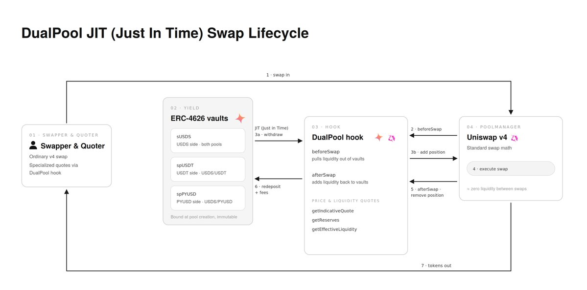
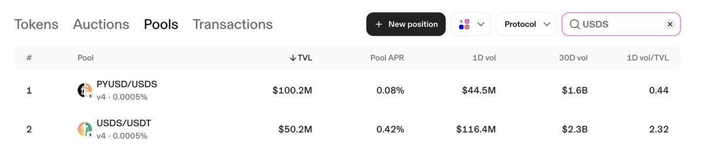
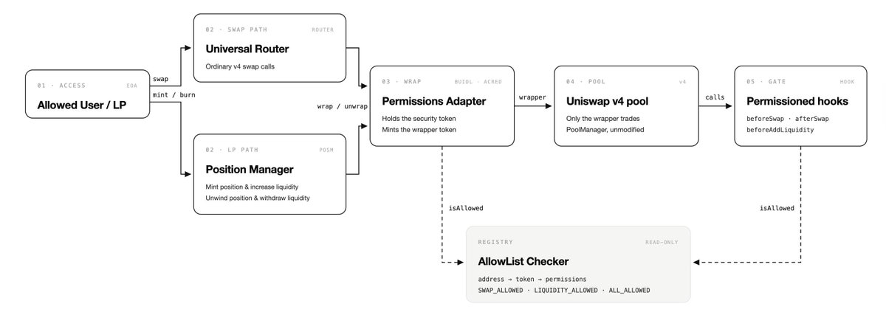

Change is the only constant, and intelligence is the ability to adapt to change in LiFe and in the DeFi Digital Assets space. Uniswap is a good example: not only has it gone through years, teams, and four successful iterations of the core protocol, but it is now gracefully and, to the untrained eye, seamlessly shifting toward institutional adoption. The key 2026 projects to notice: BUIDL swaps via UniswapX, DualPool Hooks with Spark, and Permissioned Pools.
Project One: UniswapX BUIDL/USDC Swaps
Brief
On Feb 11, 2026, Uniswap Labs and Securitize announced a strategic integration making BlackRock’s BUIDL tradable via UniswapX, allowing investors to trade BUIDL into USDC and back, with market makers Flowdesk, Tokka Labs, and Wintermute filling orders at launch.
Technical Context
UniswapX is an intent-based trading protocol, launched in July 2023: instead of executing swaps against a pool, the user signs an off-chain order stating what they want (sell X for at least Y). The order first runs through an RFQ (request for quote) round where quoters compete for a brief exclusive fill window; if unfilled, it opens into a Dutch auction decaying toward the user’s minimum price. A filler executes an order by calling a Reactor contract, which pulls the user’s tokens via Permit2 and enforces delivery of the output tokens at the auction price, atomically. Fillers can source liquidity anywhere — ordinary Uniswap pools, other DEXs, CEXs, or their own inventory. Fillers pay the gas for executing the order, and given that the order is signed off-chain, this prevents the sandwich-style MEV attacks that common onchain swaps are susceptible to. Because fillers are identifiable and whitelistable, the model supports permissioned order flow, which is what allows compliance-gated assets like BUIDL to trade on UniswapX.
How Does It Actually Work?

(1) → (2): The BUIDL holder requests a quote for a BUIDL → USDC swap; the Uniswap API runs an RFQ (Request for Quote) auction among allowlisted market makers — Wintermute, Flowdesk, Tokka Labs.
(3) → (4) → (5): The API returns a parameterized order (output amount, decay window, deadline, nonce); the holder signs it off-chain as a Permit2 message bound to the exact order terms and posts the signed order to the Uniswap backend.
(6) → (7): The winning market maker (filler) fetches the order and fills it through the V2DutchOrderReactor contract, which executes the BUIDL/USDC swap atomically by pulling BUIDL from the holder via Permit2 and delivering USDC from the market maker in the same transaction.
Results and Flows
All traces of onchain activity hint at limited use so far. Most transactions were minor and executed in Feb 2026. As institutional flows and appetite grow, the number of assets tradable via Uniswap’s intent-based UniswapX system may grow too.

Project Two: Spark and Uniswap DualPool Hook
Brief
On June 25, 2026, Uniswap Labs, Spark, and Sky announced the ‘FX Layer for stablecoins,’ with Spark migrating ~$150M into Uniswap v4 USDS/USDT and USDS/PYUSD pools; the collaboration’s DualPool hook went live July 22, letting pool capital earn yield in Spark’s ERC-4626 vaults between swaps, with Spark operating the largest deployment. The ‘FX’ framing of the announcement means that stablecoins from different issuers trade like currency pairs, with USDS as the quoting asset all flows route through, so N stablecoins need only N pools instead of one per pair.
Technical Context
DualPool is a Uniswap v4 hook, developed by Uniswap Labs in collaboration with Spark. Hooks are the defining feature of Uniswap v4, which launched on mainnet January 31, 2025. In v4’s architecture, all pools live inside a single PoolManager contract (the singleton), and each pool can designate one hook contract at creation. A hook customizes the pool’s immutable swap logic by invoking custom logic before and after the main calls — swaps, liquidity changes, and initialization.
DualPool lets market makers earn lending yield on their inventory until the moment an AMM swap needs it, solving the tradeoff between providing AMM liquidity and earning yield on idle capital. Between swaps, a DualPool holds approximately zero resident liquidity in the PoolManager (the v4 singleton contract that custodies all pool tokens in Uniswap v4). Instead, the pool’s capital rests in ERC-4626 vaults, and the hook deploys concentrated liquidity just-in-time (JIT), inside the beforeSwap hook call, for exactly one swap — then removes it again in the afterSwap hook call.
How Does It Actually Work?

(1) → (2): The swapper submits an ordinary v4 swap to the PoolManager, which triggers the hook’s beforeSwap callback before any swap math runs.
(3a) → (3b): Inside beforeSwap, the hook computes the inventory its tick ranges need at the current price and withdraws only the shortfall from the bound ERC-4626 vaults, then posts it into the PoolManager as concentrated liquidity positions.
(4) → (5): The PoolManager executes standard v4 swap math against the just-minted positions; the hook’s afterSwap then removes every position it added, returning the pool to approximately zero resident liquidity.
(6) → (7): The hook redeposits the remaining inventory plus earned swap fees back into the vaults, and the swapper receives their output tokens from the PoolManager with all steps settling atomically in the single swap transaction.
Results
So far Spark has reallocated $150M into common Uniswap v4 pools with no DualPool hooks or Vault liquidity allocation enabled. Keeping an eye on the transition to the next stage given that the DualPool announcement is very recent (end of July).

Project Three: Permissioned Pools with Hooks
Brief
On July 23, 2026, Uniswap Labs announced Permissioned Pools, a v4 hook standard for trading compliance-gated assets on an AMM, developed with Securitize, Superstate, and Dowgo, live on Ethereum mainnet.
Technical Context
The design keeps the restricted asset out of the shared PoolManager entirely: a Permissions Adapter custodies the underlying security token and mints a 1:1 wrapper that the pool actually trades, with wrapping and unwrapping handled by the Universal Router and a Permissioned Position Manager. This is yet another Uniswap approach, alongside Project One (UniswapX + BUIDL swaps), to trading and growing into the RWA security-token space, where assets carry built-in transfer restrictions.
How Does It Actually Work?

The Uniswap Permissioned Pools architecture consists of four components:
- Permissions Adapter — an ERC-20 wrapper that custodies the security token and mints a wrapper token 1:1. Only the wrapper tokens are held within the v4 PoolManager (the v4 singleton holding all swappable tokens); the restricted asset never leaves the adapter contract.
- Universal Router and Permissioned Position Manager — swaps through the Universal Router and liquidity provisioning through the Permissioned Position Manager both route via the Permissions Adapter first, converting between the security token and its wrapper. LP position NFTs are non-transferable as well.
- AllowList Checker — a registry contract mapping address → token → permission (swap, liquidity, or both). Reusable across wrappers, so issuers of security tokens maintain eligibility in one place.
- Permissioned Hook — a standard v4 hook attached to the pool that re-checks the allowlist before every swap and liquidity provision.
Conclusion
Uniswap is clearly reaping the rewards of thoughtful design, architecture, and innovation, allowing composability and adjustments via hooks and permissioned execution via intent-based systems like UniswapX, all while keeping the core permissionless primitive immutable, preserving the decentralization ethos of a space marching toward institutional adoption. As in nature, the most adaptable (protocols) survive, thrive, and grow TVL & flows, and valuations, while the rest disappear into extinction in a world that does not wait for those not ready to embrace change.